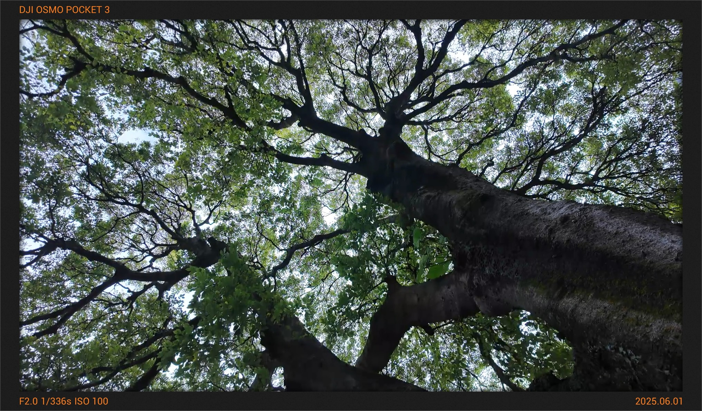
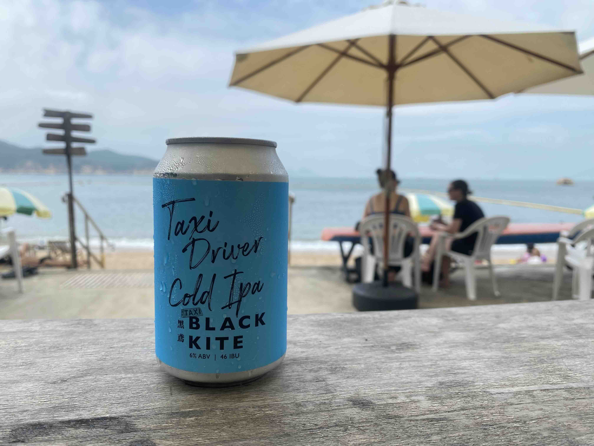

Zine#36
这周决定减少新信息的摄入，先消费积攒的链接，不然一直累积新链接，根本看不完。1
那些“旧”的链接既然被我收录，肯定是有我感兴趣的部分，不妨先看完，不用急着收集新的内容。
新的一周，祝你开心啦～
｡:.ﾟヽ(*´∀`)ﾉﾟ.:｡
琐碎二三事
海子的诗
活在这珍贵的人间
太阳强烈
水波温柔
一层层白云覆盖着
我
踩在青草上
感到自己是彻底干净的黑土块
活在这珍贵的人间
泥土高溅
扑打面颊
活在这珍贵的人间
人类和植物一样幸福
爱情和雨水一样幸福
⸺ 海子，《活在这珍贵的人间》，1985 年 1 月 12 日
上周去书店看到了《海子的诗》，被书的背面的这首诗吸引，把书买了回来。
看了大半，整本诗歌我都挺喜欢的，正如《活在这珍贵的人间》中的那两句，“太阳强烈，水波温柔”，整本诗歌给我的感觉就是如此。
港岛径徒步
端午节报了“行走二十岁”的团去了香港的港岛径徒步。
一大早从莲塘口岸过海关，莲塘口岸过关似乎比其他口岸更快，出关和入关相隔很近。
港岛径是 香港四径 之一，我们走的是第 8 段，终点是大浪湾。
整体走下来不是很累，主要是背了不少水，负重会有点累。
香港的徒步路径自然环境保护的比较好，路上比较少石阶，更多的是原始的土路，泥路，沿路很多树和花，有的树大概是因为海风的关系弯成了拱门状。
徒步那天是个阴天，也不热，有一段路在山脊上，称为“龙脊”，能看到很好看的海景，风也很大，是那种感觉跳起来能被吹走的大风。
走到大浪湾后在海滩休息了会儿，感觉海滩上的人都很松弛，有玩冲浪的，玩沙滩排球的，还有很多小孩在开心的玩沙子。
晚上在一个山顶的青旅休息，能看到维多利亚港的海景，青旅据说是以前的水手住的，还依稀能看到一个旧的炮台。
青旅整体来说很像大学宿舍，有设备完善的厨房，洗浴间也挺干净舒适的。
山顶上的风也很大，偶尔飘落几点雨滴，晚上和其他人一起看着夜景聊聊天，玩了玩不要做挑战，也挺开心。
旅途中除了风景，遇到不同的人，了解别人的故事也是很有趣的一部分。
第二天从中环乘轮渡去了长洲岛，整个岛不大，是能用脚一天丈量完的大小。
早上先和“二十岁”的人一起爬了北眺亭，应该是岛上最高的观景亭，能俯瞰全岛的海景，也是一段很舒服的徒步。
中午在码头附近的大排档吃饭，点了一份沙爹牛肉鸳鸯米，所谓鸳鸯米，其实是两种米线拼搭出来的，一种透明的，一种是米白色的，尝鲜试了试，我还是更喜欢吃面。
沙爹牛肉的汤底味道也挺浓郁，就像是日式拉面的汤底。
岛上也有很多网红店，试了试鱼蛋，比平时买到的鱼蛋大得多，有一个鸡蛋那么大，味道还行。
饭后大家就各自活动了，我和女朋友打算再走走，去另一端的南氹湾和小长城看看。
有点失策的是水带少了，天气也比较闷热，走的这一段没有便利店，走到后面都没有水喝了。
沿路都是一些居民建筑，很多高大的树，还有很多一直“啊……啊……啊……”叫的乌鸦，人很少，偶尔才能碰到两三个人。

走到南氹湾，只有一个很小的沙滩，海浪也比较大，除了海里有两三个人在浮潜，就看不到其他人了。
不会游泳，只敢在海滩上走走，不敢往海里去，汹涌的浪让我有点害怕。
海水很蓝，浅蓝色的，深蓝色的。
稍作休息，便继续往小长城走，路上偶遇了一只狗，在到处标记领地，等我们从小长城出来，去到观音湾海滩，发现它早就到了。
在观音湾海滩上总算是买到了水，买了瓶 60 港币的啤酒坐了会，看到前面有个看起来五十岁左右的外国女人，右手抽烟，左手喝啤酒，有点酷。

之后便回程了，乘船回到中环，吃了顿冰室，去 7-11 买了些啤酒，结束了这次的港岛径之旅。
整体来说还是挺开心的，徒步难度也不大，还被“行走二十岁”的领队种草了四大径和武功山，等之后有时间想尝试将四大径都走一遍。
离职
上周提了离职，裸辞了现在的工作，主要的原因是不喜欢这里了，不喜欢这里的人。
最近的工作中总是因为一些人和事而憋气，我觉得长此以往有害身体，最近我终于受不了了。
其实我早该走了，离职的念头出现过很多次，以前给自己的条件是，如果超过三次就走，但到现在也不记得有多少次了。
提离职还是需要一点点勇气，不过一旦提出后，基本就是开弓没有回头箭，心意已决，相对来说就轻松得多。
按惯例，上头还是会找我聊聊，希望挽留一下，问一下原因，希望给一些反馈。
我是什么都没说，不想吐槽，不想反馈，如今也没啥意义，无非是让上头的人觉得我事多，搞不好还会反咬我一口。2
接下来还是有不少开发任务和交接工作，等离职了，我应该会先 gap 一段时间，处理一下自己手头上堆积的事情，好好锻炼一下身体。
虽然当前的就业环境不好，gap 可能也会被歧视，但不应该因此而失去了选择，那些烦心的事情，留到休息完再说吧。
暂停使用 Folo
Folo 是一个很棒的 RSS 应用，能够订阅各种内容，支持多端，还自带翻译和总结，方便阅读。
但是用了一阵子后，我发现我会容易上瘾，我订阅了很多的 RSS，导致每天都会更新很多内容，有种信息焦虑感，失去了对于订阅信息的掌控感。
这不是 Folo 的问题，是我的问题。
Folo 带来的便利性，更丰富的图文展示，总是会让我拿起手机的时候，忍不住去刷一下。
而且我也会很在意自己的博客的阅读量，总是有事没事翻翻看。
我想缓解这种信息焦虑感，所以上周我把 Folo 从我的书签里删除了，回到 elfeed 中来。
回到 elfeed 后，我刷 RSS 的频率大幅度降低了，因为阅读的入口不像浏览器书签那么方便。
也许我会错过一些最新的内容，但是没关系，有空的时候再看看就好了，或者找一个时间专门看，反正它们就在那。
News | Article
You Can Choose Tools That Make You Happy
作者经常看到论坛上有很多争论，什么编辑器是更好，什么语言更好。
实际上不同工具有各自的优点和缺点，人们之所以认为自己用的更好，是因为他们对自己熟悉的工具存在感情。
管他好不好，自己用得快乐就好了，不必去和别人争论好坏。
摘录
一般的形式是：为什么冷门的东西比流行的东西更好。
而且理由总是声称是理性和技术性的。
而且总是，总是，完全是诡辩。
为什么？
因为人们在做技术决策时，部分是出于情感原因。
他们选择某项技术是因为感觉好，或者舒适，或者因为那是他们熟悉的东西。
他们选择冷门技术作为一种同情魔法，就像那个用 NetBSD 在 ThinkPad 上操作的人，想感觉自己像 William Gibson 小说里的主角。
他们选择过时的语言，比如 Lisp 或 Smalltalk，因为他们想到 Xerox PARC 的英雄时代，想与那个传统产生联系。
他们找到与自己气质相符的工具：Ada 代表 ⸺ 缓慢、保守、巴洛克 ⸺ ，而 Rust 代表 ⸺ 快节奏、未经验证、新贵 ⸺ 。
他们用 Emacs，因为读过 Neal Stephenson 的那篇文章，觉得 VS Code 是给普通人的，而 Emacs 是诺斯替主义者的选择。
但很多人无法向自己承认这一点！
因为这与他们的身份认同相悖：他们认为自己是无情的笛卡尔理性主义自动机。
所以他们编造理性化的理由。
一旦你读够了这些帖子，你就会看到其中的模式。
所以我们来一刀两断吧。
Emacs 是一个诺斯替教派。
你知道吗？这没关系。
事实上，这很棒。它让你快乐，还需要什么呢？
如果它让你快乐，你完全可以使用那些奇怪、晦涩、不便、过时、半死不活的东西。
我们终将一死。如果你幸运的话，能活过三十亿秒，然后就走了。做你被召唤去做的事。
把 ZFS 放进你的空气炸锅，用 Fortran 报税。
我们使用工具来体现它们的优点。
你用 Tails 是因为它很赛博朋克？那太酷了，伙计。全力以赴。
买一件皮夹克。如果你是为了美学，那就全力以赴。让你的生活成为一件活生生的艺术品。
去曼谷背包旅行，在 Gemini 上写小说，用 2003 年的数码相机为你的 LiveJournal 拍照。
把家庭群聊搬到 Signal。用 ISDN 公用电话拨入站立会议，告诉你的项目经理联邦调查局在找你。然后写一篇博客文章讲述这一切。
别跟我胡扯。
别看着我的眼睛告诉我 SNOBOL 是未来的语言。
别跟你的老板说，是理性的成本收益计算让你用 Prolog 重写前端。
最重要的是，不要对自己撒谎。
审视你的动机。
如果你纯粹出于痴迷而追求某些东西，忽视理性，你可能会醒来时发现自己已经在一个死胡同里默默劳作了多年。
Find Your People
Y Combinator 联合创始人 Jessica Livingston 在 Bucknell University 的演讲，篇幅不长。
主要的观点是：
- 人生是旷野，而不是轨道，大学毕业，失去了原来的轨道，前面是一片充满了选择的旷野。
- 也许你在大学里表现得不好，但你不说也没人知道，不必因此而不自信，此时此刻，你依然可以决定自己想成为是什么样的人，任何时候都可以改变。
- 旷野很大，选择很多，如何选择呢？可以通过那些你觉得有趣的人，问问他们在做什么，从而找到自己喜欢做的事情。
- 选择可能会受到很多质疑，但是你应该坚持自己，练习拒绝，学会拒绝，忽视那些阻碍你的声音。
看完文章，给了我一些鼓舞。
摘录
第一步是意识到地铁在这里停了。
到目前为止，你们大多数人一直在铁轨上前进。
小学、初中、高中、大学 ⸺ 下一站总是很清楚。
在这个过程中，你们被训练去相信一个不真实的东西：人生全是铁轨。
有些工作如果你愿意，可以让生活保持像铁轨一样的轨迹，但实际上今天是最后一站。
这个事实令人恐惧，以至于很多人试图否认它。（我当然也曾如此。）
但这也令人兴奋。
你现在可以朝任何方向走。
我当时没有意识到这一点，所以我去寻找更多的铁轨。
我找了一份大公司、知名企业的工作，希望他们能培训我做某件事，但实际上我并不知道也不在乎是什么，只要我能走上另一条新的轨道。
毕业后的那个秋天，我在 Fidelity Investments 的客户服务部门上夜班，回答人们关于他们的共同基金价值为何下跌的问题。
这对我来说既不有趣也不开心。
那么我为什么要这么做呢？
有两个原因：我当时不懂得更好的选择，而且我觉得自己没有特别擅长的工作技能，所以只要有人愿意付钱让我做任何事情，我都会很高兴。
所以我要告诉你们一个小窍门，就在这条铁轨的尽头。
你可以重新塑造自己。
我真希望我早知道自己可以这么做。
我大学时很懒，成绩很差。
但真正的问题是我相信了那些成绩：我相信平庸的成绩意味着我是个平庸的人。
这种想法困扰了我好多年。
我相信你们大多数人在学校的表现都比我好，但也许你们中有些人对自己有点不自信。
但事实是：你不必告诉别人这些。
他们并不知道。
所以如果你愿意，你可以决定在此刻换个方向，没有人会告诉你不行。
你可以决定变得更好奇、更有责任心或更有活力，没有人会去查你的大学成绩然后说，“等等，这个人应该是个懒散鬼。”
如果当时我知道现在知道的事情，我会意识到大学毕业后可以从事许多不同类型的工作，有些工作比其他的有趣得多。
如果我知道自己可以更有野心，我会尝试去争取那些更有趣的工作。
事实是，你可以去工作的地方有成千上万，你必须考虑所有这些选项，找出最适合自己的。
但这听起来不可能，对吧？
你之前只需要在 60 个专业中选择一个，现在却要在成千上万个工作中选择一个？
你怎么做得到？
第一步，是承认你必须这么做。
你不能像我那样，随波逐流地进入 Fidelity。
那么接下来呢？
你如何在成千上万个选项中筛选？
说实话，你做不到。
你必须用某种方法来缩小范围。
我最喜欢的方法是通过人。和人交谈。认识新的人。找到你觉得有趣的人，然后问问他们正在做什么。
如果你发现自己在一个你不喜欢那里的人的地方工作，那就离开。
这也引出了我关于制定雄心勃勃计划的最后一点： 你必须对拒绝免疫。 (学会拒绝)
人们一开始会轻视你。如果这就足以让你停下脚步，那你注定失败。
所以你必须学会忽视这些声音。
这比听起来要难 ⸺ 社会压力非常强大。
但所有做雄心勃勃事情的人都必须学会抵抗它。
如果你有雄心勃勃的计划，很多人会持怀疑态度。
你看起来像是在自不量力，除了你的父母可能例外。
即使是他们，通常也会过于保守。
此外，大多数雄心勃勃的想法一开始看起来都是错的。
如果一个新想法显而易见地好，别人早就做了。
[…]
我承认，当时我还没有现在这么能抗拒拒绝。这是我通过大量练习学会的。但现在我已经很擅长了。
所以我就是证明，你可以学会不在乎别人怎么想。
现在我有个好消息：我快讲完了。
我讨厌冗长的演讲，我猜你们也一样。
坦白说，如果你能记住我到目前为止说的内容，那就足够了。
让我再提醒你们一遍：到目前为止，你们的人生几乎是没有怎么掌舵的。
如果你愿意，现在可以变得更有野心，但要做到这一点，你必须开始掌舵。
你不能只是随波逐流。
选择有很多，你必须主动去弄清楚哪个最适合你。
而做到这一点的最好方法就是依靠人。
找到那些有趣的人。
The two types of open source
作者将开源项目分成高期望和低期望的项目。
如果一个项目是高期望的，当你无法满足用户的高期望，就可能受到很多谩骂。
不妨一开始就让项目低期望一点，尤其是一些个人维护的项目，创造的热情可能会消退，要做的事情可能也还很多，不要给别人太高的期望，这样就可能会少一些麻烦。
摘录
如果你正在开发一个开源项目，很可能你希望它受欢迎。
所以你会投入精力去推广它：你让 README 非常吸引人，添加网站，录制视频，写博客文章。
你尽快发布 1.0 版本。
你创造了很高的期望。
但生活总会发生变化（这是不可避免的），你发现自己要为很多人维护一个庞大的项目。
而这些人有很高的期望。
说清楚：你不应该受到辱骂。绝不应该。
但我们也要承认，尽管你的 LICENSE 文件中写着“按现状”提供，用户有权感到沮丧。
通过你的营销，你让他们相信你的项目比实际更可靠。
这就是为什么我建议强迫自己保持低期望。
对潜在用户非常坦诚。
告诉他们你是一个人或一个小团队在工作。
告诉他们这是一个副业项目。
告诉他们这是非商业性质的，你不打算（甚至看不到办法）将来从中赚钱。
永远记住，项目在开始时看起来要容易得多，工作起来也更令人兴奋。
人们低估了所需的工作量，同时高估了自己在五年后对项目的热情。
I made a font

作者制作了一款等宽字体，文章记录了他动机、设计以及碰到的问题，他还分享了一些字体制作相关的资源。
我喜欢摆弄软件。
为自己制作一款定制字体看起来真的是一件非常酷且有趣的事情。
The Future is Colourful and Dimensional
作者认为设计趋势正从扁平化再次回到拟物化 (skeuomorphism, Colourful and Dimensional)。
潮流总是往复循环的，人都图一种新鲜感，现在的东西看腻了，觉得以前的东西也不错。
不过也是一种螺旋上升吧，虽然“复古”到原来的审美，但也会往里面添加一些新的理解。
If nothing is curated, how do we find things?
社交媒体流行前，信息可能会集中在一个网站里，有专门的人进行信息的筛选和整理。
社交媒体虽然提供了便利，但也导致了信息的分散，分散在帖子的各个地方；不同社交媒体也是不同的信息孤岛，不愿意共享信息；算法会给你编织信息茧房。
作者怀念过去的“老式网站”，决定自己收集感兴趣的信息，减少社交媒体中算法的影响。
摘录
读这段话时，我想，“正是在这种时候，老式网站就派上用场了。”
说实话，确实如此。
虽然社交媒体很方便，但它像喂鸭子一样把信息四处散落。
你不得不四处寻找信息，或者希望神奇的算法之神能读懂你的心思，把信息引导到你面前。
我一直觉得社交媒体制造了一种便利的错觉。
想想要跟上音乐或电影的最新动态需要花费多少时间。
如今需要花费多少时间，需要进行多少搜寻。
虽然科技让信息变得丰富且触手可及，但它也把整个互联网变成了一堆泥潭。
现在，我们不再依赖专业的策展人帮我们筛选内容，而是必须自己来做筛选。
社交媒体的兴起扼杀了策展艺术，因为如今，事物很少被策划。
批评已经死了（Fantano 是唯一的例外），而 Alpha 世代除了通过 TikTok，根本不知道如何发现音乐。
依赖算法把太多权力交到了技术手中。
算法只能预测你以前看过的内容。
它永远不会用不同的东西来给你惊喜。
它把你困在一个小泡泡里。
哦，你喜欢 shoegaze？
那么算法就只会给你这些，直到你有意识地开始听别的东西。
这让艺术（音乐、电影、电视等）看起来像是一大堆泥浆。
它让人感觉浩瀚而令人疲惫，就像一份永远看不到尽头的无尽清单。
我注意到社会上有这种情绪，这种总是精神疲惫的感觉。
我们和朋友讨论时，朋友推荐一部剧，我们的回应常常是，“哦，是的，我得看看，但我的剧单太长了！”
现实是我们不会去看，因为感觉没有时间看完所有东西，而且我们并不完全信任别人的推荐。
这就是策展发挥作用的地方。
我们需要那些毕生致力于浏览这堆泥浆的评论家，告诉我们什么值得花时间，什么不值得。
所以我想下一个问题是 ⸺ “我该如何解决这个问题？”
像大多数人一样，我开始收缩使用。
减少依赖算法来预测我喜欢什么的时间 ，更多时间只是用 Obsidian 做笔记和列表。
每当我偶然发现一些看起来有趣的东西，或者一些我不想忘记的东西，我都会记下来，以便以后检索。
说实话，这并不算是一个很好的解决方案，因为它仍然让“掌控一切”感觉像是一份工作。
但我很难找到更好的方式来结束这篇文章。
这可能就是社会的新常态。
那些优先考虑舒适的人会待在他们的算法泡泡里，而那些关心开阔视野的人则会优先自己去寻找东西。
搜索够久，最终你会找到你想要的东西。最终。
Thoughts on thinking
作者用了一段时间 LLMs，感觉陷入了一种困境，LLMs 确实带来了一些便利，让人感觉你在利用 LLMs 思考，但作者觉得相比以前，自己变得更迟钝了。
因为从 LLMs 里获得的是结果，而缺少了自己思考的过程，思考过程才能带来智力的成长。
从 LLMs 获取的是资讯、信息，而如果想转化成自己的知识，依然需要花费时间去思考和理解。
摘录
我过去写作非常多产。
我会有想法，把它们写下来，慢慢地、仔细地将它们打磨成连贯的作品，然后 ⸺ 当它们准备好时 ⸺ 与世界分享。
在分享任何东西之前，我会痴迷地花几个小时，反复推敲我的思考的优点和缺点。
在我职业生涯的早期，这个过程带来了很多外部认可。
因为我在写作时思考，写作是我形成观点和解决论点漏洞的方式，所以我的写作随着时间的推移会带来更多、更好的想法。
思考是复利 ⸺ 你思考得越多，想法就越好。
但现在，当我的大脑自发地形成一个潜在有趣的概念或想法的一小部分时，我只需把几句草率的话放进提示中，几乎立刻就能得到一个经过充分推理、研究和完成的想法。
几乎不需要有机思考。
这对我的大脑产生了戏剧性且深远的影响。
我的思维系统已经萎缩，我能感觉到 ⸺ 我能感受到自己稍微减弱的直觉、聪明才智和严谨性。
因为 AI (Artificial Intelligence，人工智能) 能如此轻松地充实想法，我也更不愿意分享自己的想法 ⸺ 无论它们发展得多么完善。
我以为自己在以一种极其积极健康的方式使用 AI，作为思维的自行车，极大地提升我的思考能力。
但 LLMs (Large Language Model，大型语言模型) 很阴险 ⸺ 用它们来探索想法感觉像是在工作，但这不是真正的工作。
设计提示就像刷 Netflix，阅读输出就像看电视节目。
智力的严谨来自于过程：死胡同、不确定性和内心的辩论。
跳过这些，你或许还能获得洞见 ⸺ 但你会失去有意义理解的基础。
通过阅读 LLM 的输出来学习是廉价的。
真正锻炼你的思维来自于自己构建输出。
讽刺的是，我现在知道的比 AI 出现前任何时候都多。
但我感觉自己有点笨了。有点迟钝。
LLMs 给我的是成型的想法，经过润色且令人信服，但没有那种自己发展思维过程带来的智力成长。
AI 的输出回答问题。它教我事实。但它并没有真正帮我学到任何新东西。
Tutorial | Resource
Code Related
Push Ifs Up And Fors Down
作者建议将 if 判断往上提，将 for 循环往下放。
将 if 判断往上提，可以将 if 判断集中在一起地方，便于了解整体的判断逻辑，而不是分散在很多子函数里，从而减少错误。
往上提，一些判断可能可以合并，一定程度上会减少整体判断的次数。
将 for 往下放，相比创建一个 for 循环多次执行一个函数，不如在一个函数里执行循环完成逻辑，这样可以减少函数创建的开销，提高性能。
// GOOD frobnicate_batch(walruses) // BAD for walrus in walruses { frobnicate(walrus) }
两者可以结合:
// GOOD if condition { for walrus in walruses { walrus.frobnicate() } } else { for walrus in walruses { walrus.transmogrify() } } // BAD for walrus in walruses { if condition { walrus.frobnicate() } else { walrus.transmogrify() } }
摘录
[…] 这种情况经常出现在前置条件中：
一个函数可能在内部检查前置条件，如果不满足则“什么也不做”，或者它可以将前置条件检查的任务推给调用者，并通过类型（或断言）来强制前置条件成立。
尤其是对于前置条件，“向上推”可能会呈现病毒式传播，最终减少整体检查次数，这也是该经验法则的一个动机。
另一个动机是控制流和 if 很复杂，且是错误的来源。
通过将 if 向上推，你通常会将控制流集中在一个具有复杂分支逻辑的函数中，但所有实际工作都委托给直线子程序。
如果你的控制流很复杂，最好将其放在一个函数中，使其能在一个屏幕内显示，而不是分散在整个文件中。
更重要的是，当所有流程集中在一个地方时，通常可以发现冗余和无效条件。
这个想法来自数据导向的思路。
少量的事物是少量，大量的事物是大量。
程序通常处理大量的对象。或者至少热点路径通常涉及处理多个实体。正是实体的数量使得该路径成为热点。
因此，引入“批量”对象的概念通常是明智的，并使批量操作成为基本情况，而标量版本是批量版本的特例。
这里的主要好处是性能。
大量的性能，在极端情况下更是如此。
Cool Bit
Radio Aporee
radio aporee 平台自 2000 年左右上线，radio aporee ::: maps 项目始于 2006 年底。
它是一个全球声音地图，专注于实地录音、声学生态学和聆听艺术。
该平台将声音录音与其原始地点相连接，旨在创建一个声音制图，作为一个公开的协作项目。
它包含来自众多城市、乡村和自然环境的录音，揭示了这些环境复杂的形态和声音条件，以及众多贡献者不同的感知、实践和艺术视角。
这使其成为艺术、教育和研究项目的宝贵资源，也为您的个人享受提供了丰富内容。
Single-Serving Sites
单目的网站 (Single-Serving Site) 是由单个页面组成、拥有专用域名且仅服务于一个目的的网站。
本网站试图列出所有有趣的单页网站。
CSS Minecraft
用 CSS 实现的 Minecraft，太牛了！
Simon Willison 还写了篇文章分析作者是如何实现的。
Space Selfie
太空自拍，你可以将自拍上传到这个网站，网站会上传到卫星，卫星会用你的自拍图片，以地球作为背景再拍摄一次。
我访问的时候，网站暂时挂了，显示的是 “HOUSTON, WE HAVE A PROBLEM”。
SHOWDOWN
一个剪刀石头布游戏，电脑会学习你的出招习惯，可以尝试看看能拿多少分。
Owls in towels

很多裹在毛巾里的猫头鹰的照片，可爱。
野生动物康复人员经常用布包裹猫头鹰，以便称重、治疗和喂食。
否则，猫头鹰会惊慌失措。
Tool | Library
Astra
快速、可靠且易于使用的 js 转 exe 编译器。
js-genai
Gemini 和 Vertex AI 的 TypeScript/JavaScript SDK。
nb
CLI 和本地网页纯文本笔记、书签和归档，支持链接、标签、过滤、搜索、Git 版本控制与同步、Pandoc 转换等功能，集成于一个便携式脚本中。
Emacs
- Awesome Emacs on macOS 作者整理了他在 macOS 上的 Emacs 配置，Emacs 图标 挺好看。
- Automagic Dark Mode 自动为现有的 Emacs 主题创建暗色（或亮色）模式。我是 随机乱换主题，好像用不上 (´-ω-｀)
- GNU Hyperbole The Everyday Hypertextual Information Manager.
- jjba23/welkomscherm.el 一个还不错的 Emacs 欢迎页。
Emacs and Pairs 文章介绍了 smartparens 的详细使用。
smartparens 是那种能极大提升并改变你使用 Emacs 方式的插件。
它就像拥有了赛博义肢 ⸺ 让你跳得更高，打得更猛。
不过请注意，这个名字有些误导，因为它不仅仅处理括号。
它几乎能处理所有成对的东西，并且执行这些功能非常出色。
-
一个 Emacs 插件，通过 REST API 直接将 org-mode 文件（包括图片和附件）发布到 Atlassian Confluence。
- How To Create and Publish Your Website With Emacs and Org Mode 使用 Pelican 发布 org-mode 文件。
- Building a blogging flow using Emacs and Emacs only 作者使用 org-publish 发布博客的折腾记录。
- Setup Emacs for JavaScript Development with LSP
一些话 | 摘抄
The 1:1 method
大多数备忘录、演讲和公告之所以乏善可陈，原因很简单：我们总是陷入了一个误区，认为自己是在对一大群人讲话。
当我们说话或写作时，观众其实只是一个幻觉。
实际上，那里有一个人，那里又有一个人，一遍又一遍地重复，直到我们觉得这是一大群听众。
另一种方法很简单：找到一个人，确切地说就是一个人，写给他，让其他人旁听。
采用你对一个人时会使用的语气、身体姿势、呼吸方式和标点符号。就是你和我，现在此刻。
如果对一个人都不起作用，你为什么认为对一群人会有效？
技术研发为啥都需要一块自己的菜地？
接触泥土久了，坐在菜地里看植物生长，就会问自己一个问题：
植物什么是完美的？是种子破土的时候吗？是拼搏生长的时候吗？是花开的时候吗？是结果的时候吗？还是凋零回归土地的时候？
植物从来不追求完美的时候，而人追求，所以人烦恼。
In the Beginning was the Command Line
在 GNU/Linux 世界中，有两个主要的文本编辑程序：极简主义的 vi（在某些实现中称为 elvis）和极繁主义的 Emacs。
我使用 Emacs，它可以被看作是一个热核级 (thermonuclear) 的文字处理器。
它由 Richard Stallman 创建；这就足够说明问题了。
它是用 Lisp 编写的，而 Lisp 是唯一一种美丽的计算机语言。
它庞大无比，但它只编辑纯 ASCII 文本文件，也就是说，没有字体、没有加粗、没有下划线。
换句话说，在 Microsoft Word 中，工程师们花费大量时间开发邮件合并功能以及在公司备忘录中嵌入长篇电影的能力，而在 Emacs 中，这些工程师则以疯狂的专注力聚焦于看似简单的文本编辑问题。
如果你是专业作家 ⸺ 也就是说，如果有人替你负责你的文字如何格式化和打印 ⸺ Emacs 在编辑软件中所展现的光芒，大约就像正午的太阳相比星星一样耀眼。
它不仅更大更亮；它简直让其他所有东西都消失了。
A Mansion That Changes Itself To Suit You
专用应用的用户住在租来的公寓里；
而 Emacs 的信徒则漫步在一座不断扩展的豪宅中，房间会根据他们的想法自行重新排列。
封面人物 | 硅谷第一“企业布道师”盖伊·川崎
我从雕塑家 Constantine Brancusi 那里学会了一句话：像上帝一样创造，像国王一样鼓起改变的勇气，像奴隶一样工作。
他将自己高中的英语老师 Harold 和 Steve Jobs 称为 ⸺ 一生中影响自己最深的两个人：我的老师 Harold 有自己的一套教学方法。
他让你写文章，如果你犯了语法错误，他会把错误的地方圈出来。
他不会顾及你的自尊心，你必须重写错误的地方，然后写出自己违反的规则。
对我影响最大的是那些最严厉的人。
如果你很年轻，你听到这里大概会想：我要找一个好说话的老板，我要远程办公，我要去巴厘岛玩一个月。
也许有一天，你回首往事时会想，我浪费了自己的青春。
我希望有一个严厉的导师，最严厉的是最好的。
Steve Jobs 比我们说的 ⸺ “差老板”更差。
他让员工害怕，他会公开羞辱别人。
我不是让你做受虐狂，而是 你逃脱不了生活的困难，不如从中学会些什么。
You’re a little company, now act like one
设身处地为那个早期采用者想想。
她想看到毫无内容的空洞词句，还是想听你如何完全理解她的痛点？
你应该表现得像一家大而成熟、安全可靠的公司，还是像一个酷炫、充满激情、想要有所作为的小团队？
你应该躲在“联系我们”的表单后面，还是在主页上展示你的电话号码和推特账号？
你应该宣传那些还没真正实现的功能和优势，还是推广你的论坛、博客以及每周的全客户虚拟会议，让每个人都能参与反馈？
说些具体且有意义的话。做个有血有肉的人。做你自己。
别再躲藏了。
A Vibe‐Coding Experience
作者的一次 Vibe-Coding 体验。
我能够借助 LLM 完成大部分代码，尤其是在我缺乏 JavaScript 专业知识的关键部分。
然而，随着项目的推进，对细微修正以完善功能的需求增加，LLMs 在超越某一质量门槛方面表现出越来越多的局限性。
另一方面，模型生成的代码内容丰富且结构良好，使我能够在项目接近尾声时接手，完成一些模型无法直接生成的游戏细节。
LLMs 未来可能能够处理大型项目，但目前一旦达到或超过 5000 行代码，它们就会遇到困难。
然而，对于启动一个项目来说，它们是完美的。
它们让你能够快速搭建代码的基础，然后你可以轻松进入程序添加你的修改。
LLM 甚至可以帮助你理解应该修改代码的哪些部分。
这一体验表明，vibe-coding 开辟了令人着迷的可能性：它使得对某种特定语言了解有限的人也能承担雄心勃勃的项目。
但同时也显示出这种方法在复杂性上存在局限，超过某个阈值后，需要具备技术理解才能充分实现自己的目标。
HTML is like a camera.
HTML 就像一台相机。
如果你能用 1979 年的相机拍出一张好照片，那么同样的相机今天依然能拍出好照片。
新的炫酷技术可能让某些事情变得更简单，但好照片就是好照片。
归根结底，观众不会在意你用了哪台相机。
Kagi status update: First three years
每当看到某样东西被“免费”提供时，人们应该训练自己问一个问题：到底是谁在为此买单，为什么？
多媒体
- 【官方双语】黏性指进：液体为何自发形成分形图案？ (11:01)
- 世界上最疯狂的摄影棚？我们参观了野兽先生工作室！ (30:34)
真·红烧牛腩方便面 (03:54)
吃饭跟过日子一样，就是怎么畅快怎么来。
比如我也可以斯斯文文品尝，这样不会弄得到处都是汤汁。
这样吃着有意思吗？
不用在意那么多，享受美味带来的快乐才是最重要的。
- 可能是陶喆新专辑最长的专访！丨HOPICO (55:04)
- 【全网最佳音画】方大同《Love Song》2016 Apple Music Live from the Lightroom 现场版 最温柔的一版！ (04:54)
- 不如我们再来一次 (02:28)
Music
这周主要是听了听上周 Hopico Line 分享的歌，也还不错。
Bon Iver
把 Bon Iver 所有长专辑都找来听了听，他的歌我觉得编曲很丰富，很有节奏和律动。
新专辑《SABLE, fABLE》，Short Story 和 Everything Is Peaceful Love 连成了 non stop，好听。
新专辑里我还很喜欢 I'll Be There。
Said, "I'll be there"
I won't move
Tell me more, or tell me nothing
Adrianne Lenker
更多的时间，我在听 Adrianne Lenker，同样的，我也是整理了她能找到的长专辑，全部听了听。
Hopico Line 中推荐的 《Live at Revolution Hall》我很喜欢。
这张 live 还挺特别的，和平时听的 live 不太一样，可能是因为录音方式的关系，感觉不像是在 live 现场录的，更像是日常生活中的很多片段。
推荐几首其中我很喜欢的：
- vampire empire (live)
- born for loving you (live) 这首之后还连着 i will always love you
- promise is a pendulum (live)
- fangs 这首里面还唱了 moon river
- anything (live)
虽然我推荐了几首，但更建议完整地听一遍专辑，很多随性的内容是连接着的，很有趣。
Big Thief
因为很喜欢 born for loving you (live)，就想找找有没有其他翻唱，结果找到了 Big Thief，原来 Adrianne Lenker 是 Big Thief 的主唱！
于是我又把 Big Thief 的歌都找来听听，推荐！
其中最有名的应该是 Paul，很浪漫的一首歌：
I'll be your morning bright goodnight shadow machine
I'll be your record player baby if you know what I mean
I'll be your real tough cookie with the whiskey breath
I'll be a killer in a thriller and the cause of our death
我会是你早晨的阳光 你的晚安吻 你的影机
如果你希望 我也会是你的唱机
是你带着威士忌香味的硬邦邦的曲奇
我也可以成为可怕的杀手 让我们一起死去
脚注:
陷入收件箱心态 (inbox mindset) 比以往任何时候都容易。
事情摆在那里，我们就去做。
“收件箱清零”是一个无法达到的目标，却占据了我们的大部分时间。
但这回避了真正的问题，那就是：我们到底在清空哪个收件箱？
[…]
还有心灵平静的收件箱，当我们暂时放下其他收件箱时，治愈和再生就在这里发生。